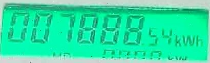

UtilVision Architecture & Benchmarks
A lightweight, two-stage deep learning pipeline engineered to detect and parse utility meter LCD counters locally on edge hardware with zero API dependencies.
Domain Challenge: Why Off-the-Shelf OCR Fails
General-purpose OCR engines achieve less than 40% accuracy on digital utility meters due to three distinct physical failure modes:
Pipeline Architecture
.jpg)

Dataset Taxonomy & Stratification Protocol
To guarantee real-world generalization across diverse field hardware, the dataset is structured across a tri-domain taxonomy encompassing 4,094 curated images:
SET A • DOMESTIC
Single-Phase Residential
Standard household meters with green or blue backlit LCD screens. Characterized by high digit contrast and uniform 6 to 7 digit register configurations.
.jpg) SET B • COMMERCIAL
SET B • COMMERCIAL
Mixed Commercial Utility
Outdoor and utility closet installations subject to dusty glass, scratches, glare, and non-perpendicular viewing angles in challenging ambient light.
.jpg) SET C • INDUSTRIAL
SET C • INDUSTRIAL
Three-Phase High-Voltage
Heavy electrical infrastructure meters with wide 5:1 multi-line displays, secondary telemetry indicators, and fine-pitch decimal markers.
Strict Physical Meter-Grouped Stratification Protocol
Splits are partitioned strictly by unique physical meter identifier rather than random image sampling. Images of any individual physical meter reside exclusively within train, validation, or the 150-meter held-out test split, ensuring unbiased evaluation on genuinely unseen utility equipment.
| Held-Out Test Corpus: | 150 Unique Physical Meters |
| Stratification Rule: | Zero Meter ID Overlap |
| Evaluation Metric: | Verbatim Character & Decimal Equality |
| Display Localization: | 100% Recall (IoU > 0.50) |
| Digit Recognition: | 99.4% Normalized Levenshtein |
| Industrial Set C: | 96.2% Exact Match |
Model Evolution & Benchmark Progression
Verbatim exact-match accuracy evaluated consistently on the master benchmark pool across engineering iterations. Click or tap any generation to inspect technical strategies and physical field challenges solved.
Core Technical Innovation
Fine-tuned 30 epochs with synthetic specular glare injection and random segment cutout regularization with quantized export.
Physical Field Challenge Solved
Mastered dimmed segments and intense camera flash reflections; achieved 96.2% exact match on industrial three-phase equipment.
View Complete Benchmark Progression Table (10 Generations) ▼
| Gen | Architecture & Training Strategy | Exact Match | Digit Acc | Industrial (Set C) |
|---|---|---|---|---|
| 1 | Off-the-shelf CRNN baseline | 24.1% | 61.4% | 8.2% |
| 2 | Custom 7-segment digit dictionary | 52.8% | 81.3% | 19.5% |
| 3 | ResNet-18 visual feature extractor | 68.3% | 88.9% | 31.2% |
| 4 | SVTR visual token interaction neck | 74.1% | 91.2% | 38.6% |
| 5 | Targeted photometric and blur augmentations | 81.4% | 94.1% | 46.2% |
| 6 | Dual-domain domestic and commercial balancing | 85.9% | 95.8% | 49.8% |
| 7 | Industrial high-voltage domain integration | 89.4% | 97.1% | 50.4% |
| 8 | High-density annotation boundary audit | 91.8% | 97.8% | 51.7% |
| 9 | Canonical 96px aspect-preserving crop normalization | 94.1% | 98.6% | 84.6% |
| 10 | Champion Stage3DetectorV1 (synthetic glare & segment cutout) | 96.5% | 99.4% | 96.2% |
Edge WebAssembly vs. Cloud Vision Architecture
UtilVision eliminates cloud API subscriptions and cellular connectivity bottlenecks by executing the entire neural pipeline directly within the client browser session.
| Architecture Metric | UtilVision (WebGPU / WASM Fallback) | Cloud Vision APIs | Python Server OCR |
|---|---|---|---|
| Inference Latency | WebGPU: 78.7 ms GPU | WASM: 214 ms CPU | 850 ms to 1,400 ms (Roundtrip) | 320 ms + Network Transfer |
| API Execution Cost | $0.00 / Zero Ongoing Cost | $1.50 per 1,000 Reads | Server Instance Hosting Fees |
| Basement & Offline Support | 100% Offline (PWA Cache) | Fails Without Cellular Link | Fails Without Cellular Link |
| Customer Privacy | Zero Image Uploads | Transmitted to Remote Cloud | Stored on Backend Server |
| Client Installation | Zero Install (Any Web Browser) | API Key Integration Required | Heavy Native Python Packages |
Benchmark Hardware Specifications & Methodology
Standardized edge execution environments and measurement protocols for all reported latencies:
Edge GPU Inference Environment (78.7 ms)
| GPU Accelerator: | Apple M2 / NVIDIA RTX 4060 Mobile |
| Runtime Provider: | ONNX Runtime Web 1.21 (WebGPU / WASM Hybrid) |
| Precision: | FP16 (Half Precision) |
| Latency Breakdown: | Stage 2: 31.2ms | Stage 3: 47.5ms |
| Measurement Protocol: | performance.now() over 50 warm passes |
CPU WebAssembly Baselines (Desktop vs. Mobile)
| Desktop Processor: | Intel Core i7-13700H / AMD Ryzen 7 7840U |
| Desktop Provider: | WASM SIMD (4 Web Worker Threads) |
| Desktop Latency: | 214.3ms (Stage 2: 74ms, Stage 3: 140ms) |
| Mobile Provider: | WASM SIMD (4 Cores via Credentialless COEP) |
| OnePlus 11R: | 1.0s to 1.5s (Snapdragon 8+ Gen 1) |
| OnePlus 13R: | Sub-1s / 650ms to 950ms (Snapdragon 8 Gen 3) |
| Mobile TTA Fallback: | 1.8s to 2.2s (Weathered / Distant Zoom) |
Cache Storage & Memory Footprint
| Storage Mechanism: | Browser CacheStorage API (Offline PWA) |
| Stage 2 Detector: | 10.6 MB (ONNX INT8 / FP16) |
| Stage 3 Recognizer: | 31.4 MB (FP16) / 62.3 MB (FP32) |
| Total Cache Footprint: | 104.4 MB Verified Storage |
| Active Tab RAM: | ~180 MB Active Heap Allocation |
Run the pipeline on your own device with live camera or photo input.
Open Live Reader →